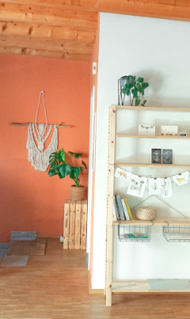
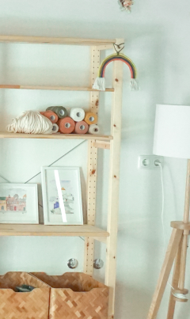
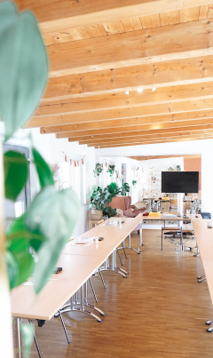

Raum
Die Nische bietet dir genügend Platz für deine Veranstaltung. Viel Holz,
Pflanzen und helles Licht geben dem Raum ein gemütliches Flair. Zusätzlich
zum Hauptraum gibt es einen separaten Raum mit Spüle und einen
Toilettenraum mit Dusche und WC.

Einrichtung
Die Einrichtung wurde schlicht und natürlich gehalten. Passend zu deiner
Veranstaltung kannst du den Raum gestalten. Entweder leer, mit Tischen
oder Sitzkissen – ganz wie du magst.

Austattung
Ob Workshop mit Tischen, Yoga-Stunde mit Matten, Mediationskurs mit Kissen
oder ein Meetup mit Präsentation – Die Nische bietet eine umfangreiche
Ausstattung.
Das bin ich:
Ich bin Sonja und der kreative Kopf hinter der Nische. Unter dem Namen
Aquarell von Naturell bin ich als Illustratorin tätig und im Oktober 2020
habe ich die Nische ins Leben gerufen. Mein Herz schlägt für ruhige
Spaziergänge, duftige Franzbrötchen und die kleinen Glücksmomente im
Alltag.
Mit meinem Studio möchte ich anderen Menschen wie Dir einen Raum geben.
Einen Raum für
besondere Veranstaltungen,
kreative Auszeiten vom Alltag,
inspirierendem Meetups
– einfach ein kreatives Zuhause für Dich.
Egal ob Tische, Stühle, Media-Wagen, Matten oder Kissen, richte Dir die
Nische so ein wie Du es brauchst.